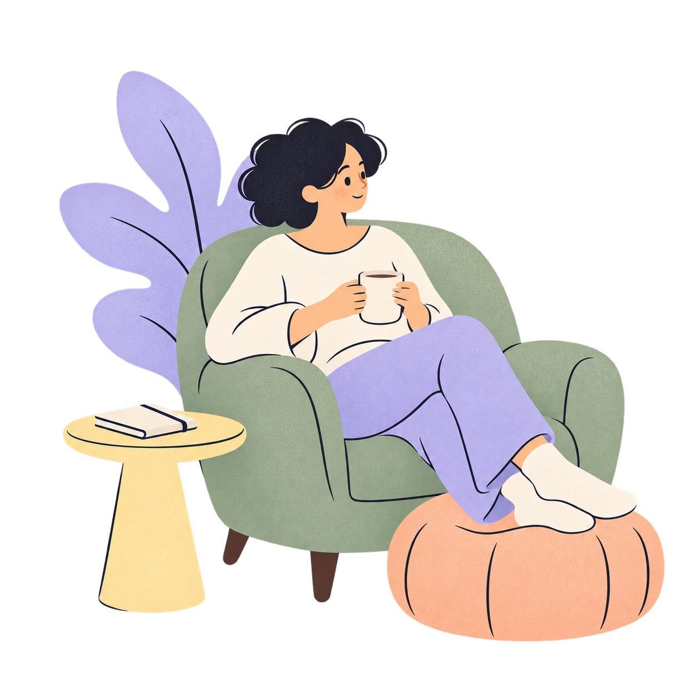

Tankemylder
Når tankerne kører i ring, kan det være svært at finde ro. Lær at give hovedet lidt plads.

Et pusterum i en travl hverdag
Nogle gange har vi brug for at trække vejret, sænke tempoet og huske os selv på, at vi ikke behøver at være perfekte.
Find dit pusterum
Lidt om at være menneske
Forventninger, skole, sociale relationer og tanker kan nogle gange fylde mere, end vi har lyst til. Her handler det om at give sig selv plads til at mærke efter og finde små pauser i hverdagen.
Små skridt mod mere ro
Når tankerne kører i ring, kan det være svært at finde ro. Lær at give hovedet lidt plads.
Du behøver ikke være produktiv hele tiden. Små pauser kan gøre en forskel.
Det kan være svært at leve op til egne og andres forventninger. Husk, at du gerne må være dig.
Du behøver ikke finde alle svarene lige nu.
Læs mere om Unplug